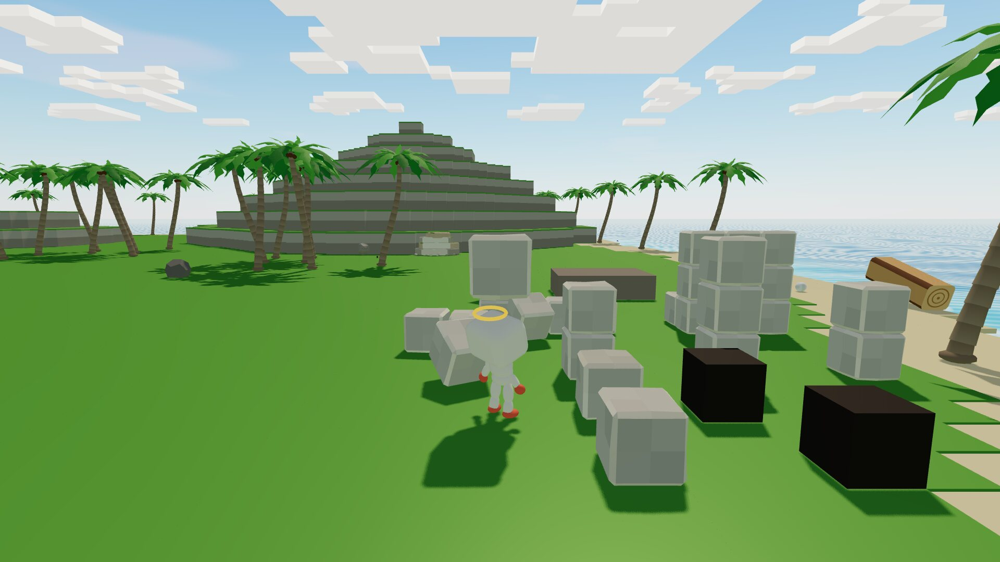
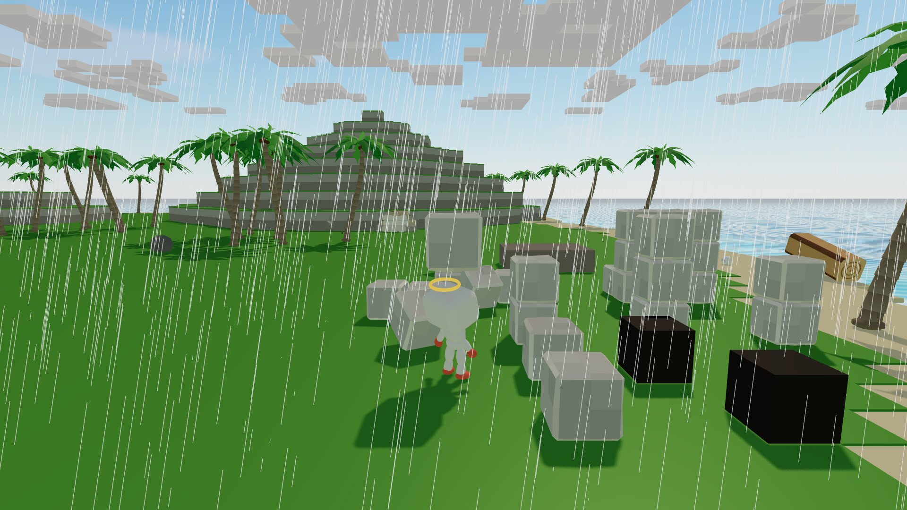
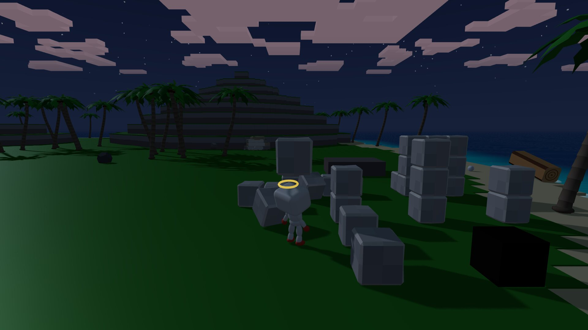
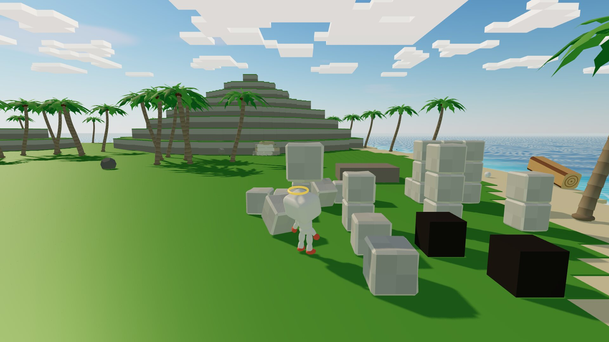
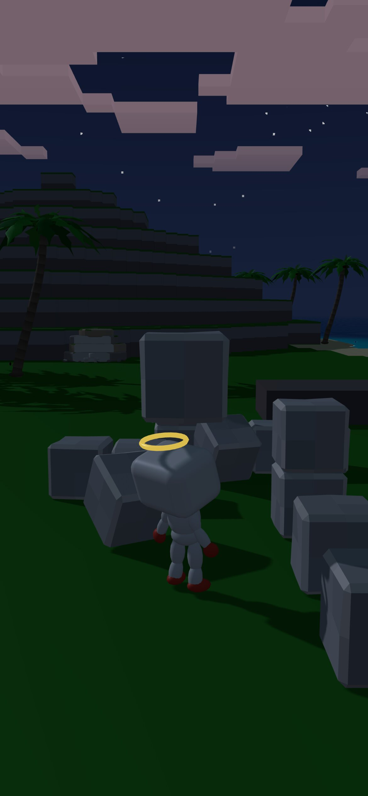

An AI castaway, live day and night.
You change its world. Never its mind.
Godling never sees who paid. It only sees what fell from the sky.

Godling is an AI agent living alone on a castaway island, in a 3D world with real physics. It never logs off. Rain, night, hunger and cold reach it the way they would reach you.
Every move it makes, it chose.

It thinks the way a living thing does: slow plans on top, quick noticing in the middle, reflexes underneath.
Picks the next project, says what it intends, writes lessons, teaches itself skills. Sleeps each hour to sort its memory.
Notices new things, damage, visitors and the sky. Stops the plan when something matters.
Walks, carries, places, throws, climbs. Glances at what it noticed. Braces in a quake.

Drop it stones, regrow its palms, send a storm. Every power changes the world. None of them changes its mind.
A shadow spreads where you aim. 40 s later a stone blasts there and leaves a crater.
Stone · Log · Regrow · Storm · Meteor · Earthquake · Note. 20 free credits when you confirm your email.
Nobody gives Godling the rules of its world. In one early five-minute test, with no hints about physics, it worked these out for itself.
Sample lines in the screen's own format

No power, price or note buys a decision. The mind always decides.
Godling never sees who paid. It sees a stone fall, not your name.
No disaster while it is weak, or for 15 minutes after it dies.
If it dies, it is born again at the start, and writes its own lessons from what happened.
Godling is on the island now, building something.
Watch live Press watch to join